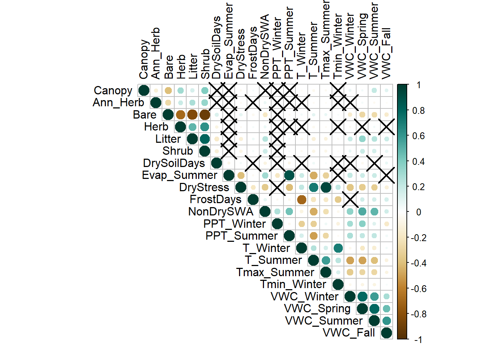
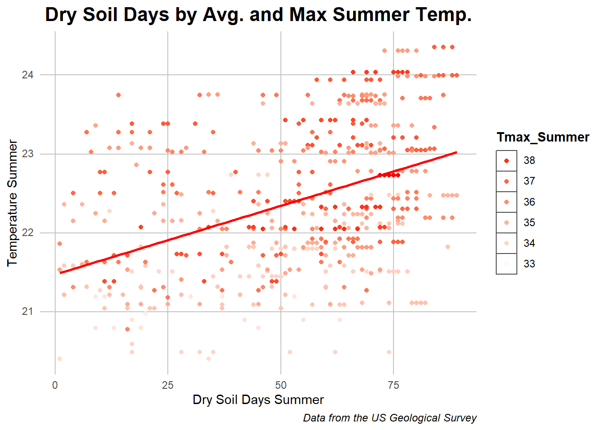
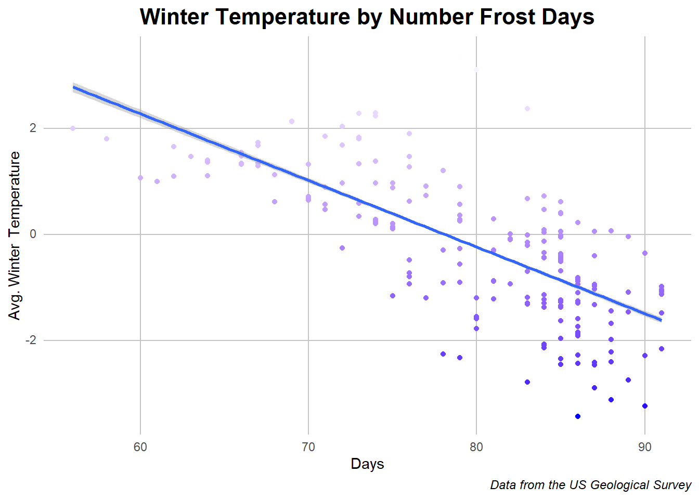
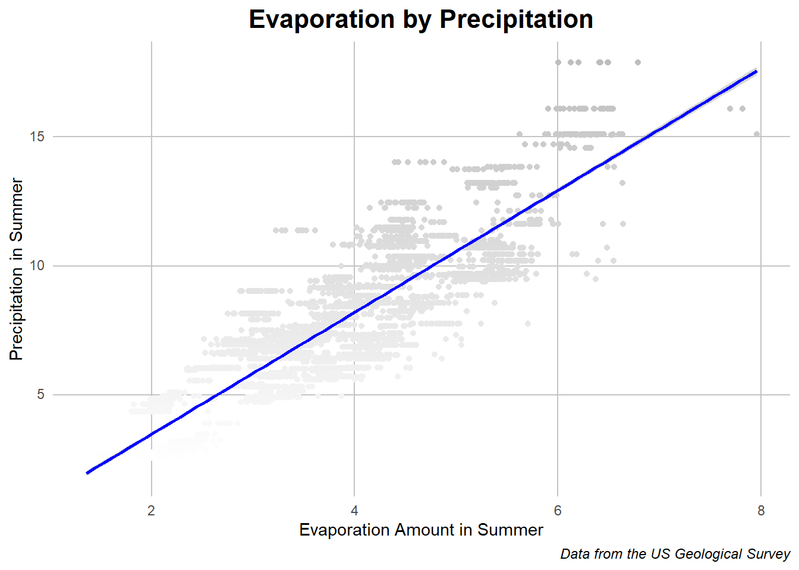
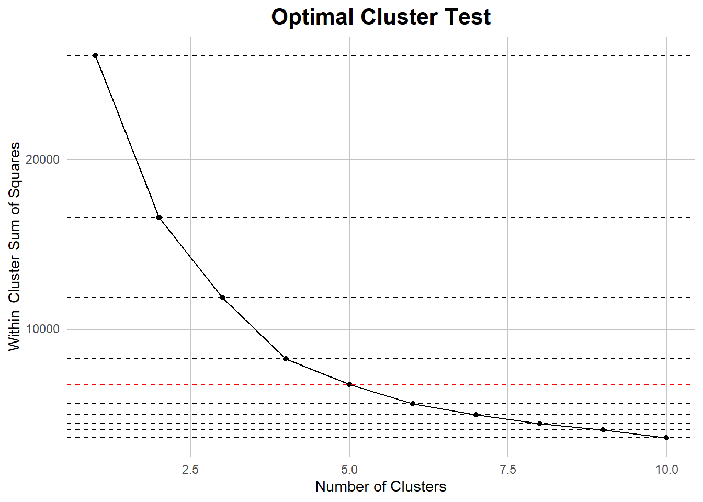
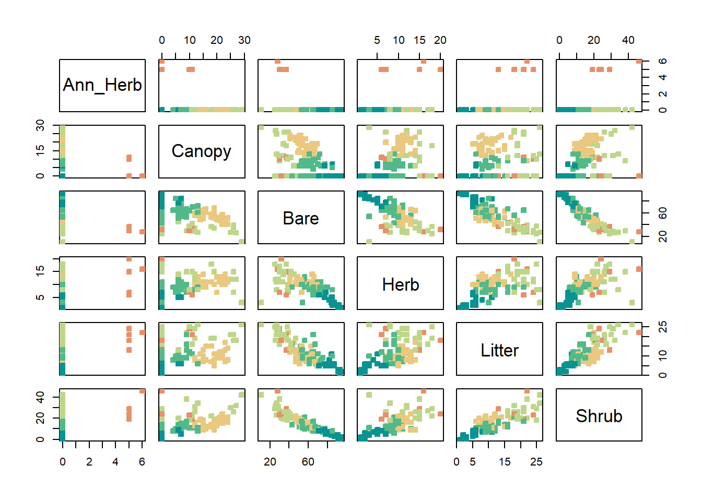
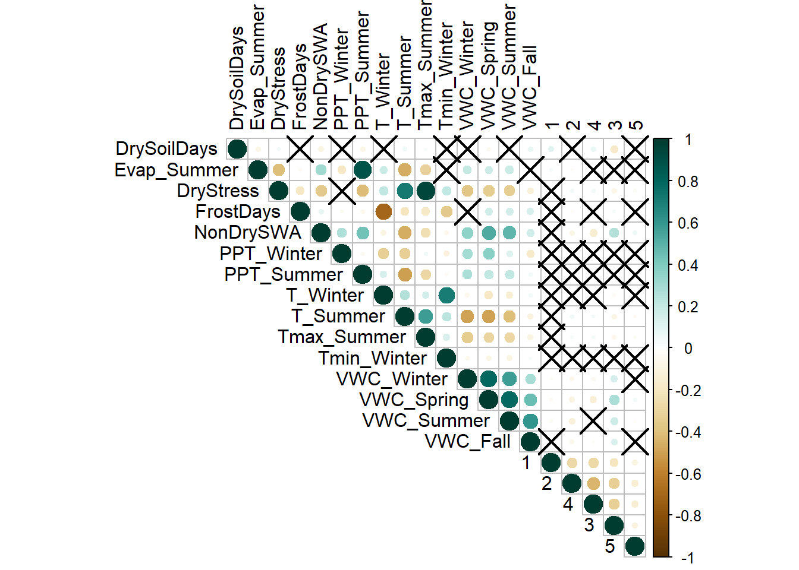
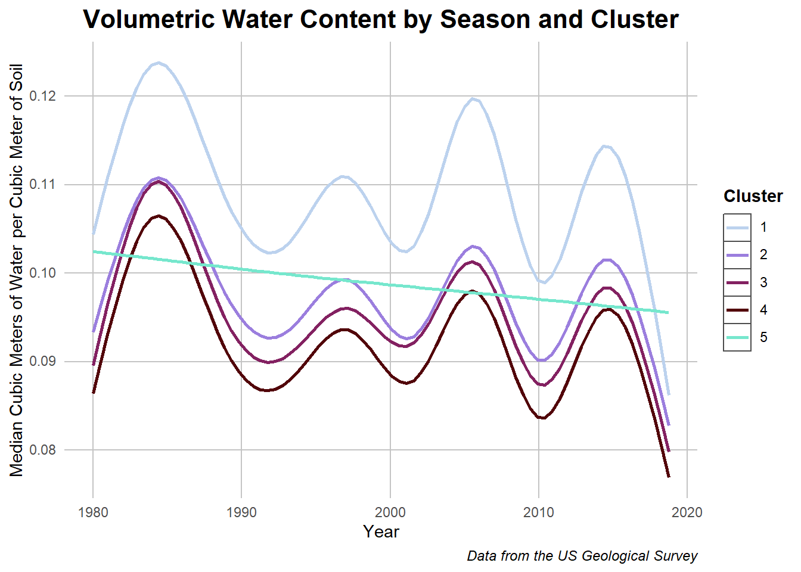
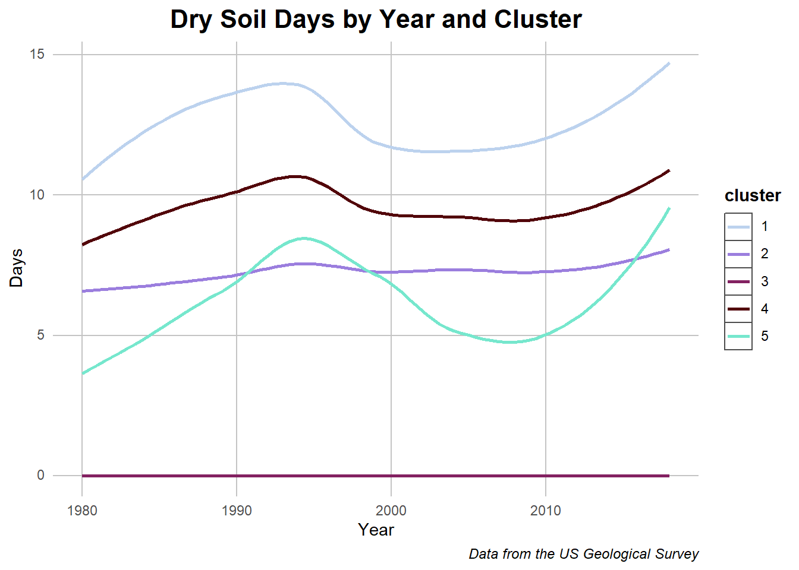
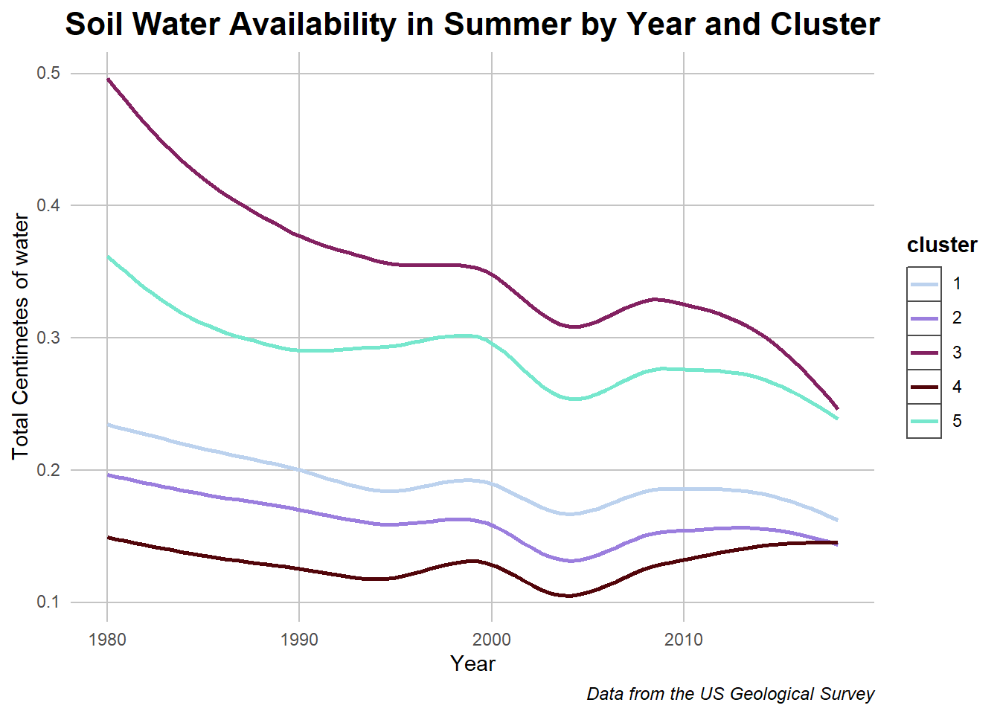

After understanding the climate variables, the question arose of what factors determine the amount of water retained in soil for plants to use. One answer to this as mentioned before is season and temperature but that still leaves questions about how plants themselves interact. Whether they are in places where water is stored more or vice versa, there is a relationship to uncover which I hope to find through a location clustering method.
Intradata Relationships
Before making any assumptions about plants and their effect, its important to consider any other relationships within the data that may also lead to different conclusions. Amongst the weather variables listed in the exploratory data analysis section, there are a few which correlated strongly due to links in what the variables are reflecting and in the data itself.
Correlation Plot of Variables
Code
## Importing packageslibrary(tidyverse)library(corrplot)## Importing Datatotal_cleaned <-read.csv("../Data/total_merged.csv") %>%select(-X)rownames(total_cleaned) <-NULLhistoric_cleaned <- total_cleaned %>%filter(RCP =="historical") %>%na.omit()## specifying the data for correlation and renaming to make text reading easiercorr_check <- historic_cleaned[,7:27]colnames(corr_check)[c(7,9,10,11,18:21)] <-c("DrySoilDays","DryStress", "FrostDays", "NonDrySWA", "VWC_Winter","VWC_Spring","VWC_Summer", "VWC_Fall")## Correlation plot with unique aestheticscorr =cor(corr_check)corr_test <-cor.mtest(corr_check, conf.level = .95)corrplot(corr, p.mat = corr_test$p, sig.level = .10, tl.col ='black', col =COL2('BrBG'), type ="upper")

Caption: this correlation plot shows cirlces for correlation, darker green for positive and dark brown for negative. Xs represent where there was no statistically significant presence of correlation.
In this plot there are a few groups which have strong correlation and some where there is light correlation overall. The foliage values have some week correlation across bare earth, plant litter, and shrubs but nothing overwhelmingly strong outside of the other foliage. Meanwhile the volumetric water content values at the bottom of the graph are strongly correlated with each other. This makes sense as an abudance of rain in one season would relate to the abundance of rain in the others. Outside of this there are a few powerful correlations which I would like to dive in further
Dry Stress and Summer Termperatures
Code
## filtering out values which skewed the dataside_graph_1 <- historic_cleaned %>%filter(DrySoilDays_Summer_whole !=0)## Plotting the relationship, using color to represent a different variableggplot(data = side_graph_1, aes(x = DrySoilDays_Summer_whole, y = T_Summer, color = Tmax_Summer)) +geom_point() +geom_smooth(method='lm', formula= y~x, se =FALSE, color ="red") +xlab("Dry Soil Days Summer") +ylab("Temperature Summer") +labs(title ="Dry Soil Days by Avg. and Max Summer Temp.") +labs(caption ="Data from the US Geological Survey") + my_theme +guides(color=guide_legend(title="Max Temp. C°")) +scale_color_continuous(low ="white",high ="red") +guides(color =guide_legend(reverse=TRUE))

Caption: the dots in this chart represent a location year’s temperature and number of dry soil days with the line representing the regression slope of the relationship.
This data shows some of the positively correlated values. The average and maximum summer temperatures affected the number of days with dry soil which is expected due to the increased heat having an effect on evaporation, a relationship which also can be seen on the correlation chart. The relationship isn’t as clean as with the other variables but the regression line added shows a positive correlation between the two.
Next to look at an opposite relationship.
Frost days and Avg. Winter Temperature
Code
## Just the plotggplot(data = historic_cleaned, aes(x = FrostDays_Winter, y = T_Winter, color = T_Winter)) +geom_point() +geom_smooth(method='lm', formula= y~x) +xlab("Days") +ylab("Avg. Winter Temperature") +labs(title ="Winter Temperature by Number Frost Days") +labs(caption ="Data from the US Geological Survey") + my_theme +theme(legend.position ="none") +scale_color_continuous(high ="white",low ="blue")

Caption: the dots in this chart represent a location year’s temperature and number of frost days with the line representing the regression slope of the relationship.
This is a clearer relationship than the last with a clear relationship between the number of days below 0 degrees celcius and the avarge temperature of the winter that year. This is not surprising as colder temperatures on the average lead to colder days but it is interesting that there is alomst a logarithmic curve to the data despite a linear fit work to approximate the relationship. Now back to a hotter relationship
Summer Evaporation and Summer Precipitation
Code
#| message: FALSE#| warning: FALSE## Just the plot againggplot(data = historic_cleaned, aes(x = Evap_Summer, y = PPT_Summer, color = PPT_Summer)) +geom_point() +geom_smooth(method='lm', formula= y~x, color ="blue") +xlab("Evaporation Amount in Summer") +ylab("Precipitation in Summer") +labs(title ="Evaporation by Precipitation") +labs(caption ="Data from the US Geological Survey") + my_theme +theme(legend.position ="none") +scale_color_continuous(low ="white",high ="grey") +guides(color =guide_legend(reverse=TRUE))

Caption: the dots in this chart represent a location year’s evaporation and precipitation amount with the line representing the regression slope of the relationship.
While evaporation was mentioned in passing earlier, there is clear evidence that more rain and precipitation in the summer leads to more evaporation. This is a clear and expected as relationship as during the warm summers with more water there is more to evaporate. It is still assuring to see suxh expected relationships in the data.
While there are other individual relationships to investigate, the correlations in weather data are expected and don’t show much of the specifics that the park’s situation would reflect. Thus I’ll be transition from focusing on how the weather affects each other to how the local flora changes the effects of the weather on the soil and earth.
Clustering Locations
As we saw from the correlation plot, the foliage itself only has light correlation with the weather variables with highlights being temperature and volumetric water content. I wish to go further in examining this relationship by grouping the locations and conducting analysis to see which combinations lead to different water retainment and temperature results.
In order to do this I will be conducting a K-means clustering algorithm to determine the optimal number of groups as well as the distributions of those groups themselves.
Choosing Number of Clusters
My first step involved taking the foliage data and placing it into the sorting algorithm at many different cluster sizes. Next, I took summaries of the clusters internal closeness, or how well clustered the variables are, and compared the amounts for each number of clusters.
Code
#| message: FALSE#| warning: FALSE## setting random seed so all the values are reproducableset.seed(25)## Selecting important valuesclustering_val <- historic_cleaned[,7:12]## Normalizingfor(i in1:6){ clustering_val[,i] <- (clustering_val[,i] -mean(clustering_val[,i]))/sd(clustering_val[,i])}## Hyperparameters?n_clusters <-10kmeans_test <-numeric(n_clusters)## Testing a variety of cluster sizesfor(i in1:n_clusters){ kmeans_out <-kmeans(clustering_val, centers = i, nstart =20) kmeans_test[i] <- kmeans_out$tot.withinss}## Within cluster sum of squarescluster_df <-tibble(clusters =1:n_clusters, Closeness = kmeans_test)## Plotting to find show the best lineggplot(cluster_df, aes(x = clusters, y = Closeness)) +geom_line() +geom_point() +geom_hline(yintercept = kmeans_test, linetype ='dashed', col =c(rep('#000000',4),'#FF0000', rep('#000000', 5)) ) + my_theme +labs(title ="Optimal Cluster Test") +xlab("Number of Clusters") +ylab("Within Cluster Sum of Squares")

Caption: An elbow chart highlighting the point where the slope of the decrease in the loss passes 45 degrees, indicating a the begining pf decreasing returns and optimal number of clusters.
After using the elbow method to determine the optimal number of clusters, I found that five was the optimal number. I then took a model with that number of clusters and reapplied it to the data in order to use it for analysis. The results showed interesting relationships between the different foliage types.
Data Table of the Cluster Means
Code
## Importing librarylibrary(DT)## making table with centerskmeans_out <-kmeans(clustering_val, centers =5, nstart =20)table <- kmeans_out$centers %>%as.data.frame()## De-normalizing themfor(i in7:12){ table[,i-6] <-mean(historic_cleaned[,i]) + (table[,i-6] *sd(historic_cleaned[,i]))}## printing data tabledatatable(table)
Caption: a table of the average value of each foliage type for each cluster
A few things that immediately jumped out after looking through the table was the one cluster, five, which seems to have been structured around location with ann_herb, the rest of its values overlap with other clusters. Outside of this, Bare earth and Litter have opposite relationships with the clusters with the most bare earth having the least litter and vice versa, showing a dimension by which the clusters found siginificance. Shrubs also had a similar relationship to bare earth although slightly different between clusters five and one. Otherwise, cluster 1 seems to have more foliage covering rather than bare earth, cluster 2 is well rounded, cluster 4 is predominantly bare earth, cluster 3 also but less so, and cluster 5 being middle of the road outside of the Ann herb values. Now lets see how these clusters act between each of the foliage types
Visualizing Clusters of Data in Foliage
Code
## Withdrawing cluster values and assigning themkmeans_out <-kmeans(clustering_val, centers =5, nstart =20)historic_cleaned$cluster <- kmeans_out$cluster %>%as.factor()## Values for Pair Plotpair_data <- historic_cleaned %>%select(c(Ann_Herb, Canopy, Bare, Herb, Litter, Shrub))## Number of colorsl <-6## Printing it outpairs(pair_data, pch =22, bg =hcl.colors(l, "Temps")[kmeans_out$cluster], col =hcl.colors(l, "Temps")[kmeans_out$cluster])

Caption: this pair plot shows the behavior of the clusters in relationships between each foliage type
We can see orange representing cluster 5’s behavior clearly with non zero values for ann herb but even for the rest of the values there seems to be clear differences in the clusters across all of the values. Lets also approach this geographically and see the distribution of each of the locations by cluster.
Geography of Clusters
Caption: This interactive graph allows you to see the relationship of locations to each other by cluster, the variety in foliage composition, and the foliage composition of each location by clicking on it on the map.
In this graph we can see some geographic overlap with instances like the dark blue cluster 1 dot being more in the valley near water with the light blue cluster 4 dot being similarly structured. Outside of that ere are a few green cluster 5 dots but they are not as common as the other types. While the averages were seen in the earlier graph, getting a georgaphic understanding will help us understand the trends in the next few graphs.
Re-approaching Intra-Data Relationships
With the clusters being established, we can reapply our clustering to variable relationships we have already seen. Starting with a revisit of the correlation plot shown earlier.
Correlation Plot with Clusters
Code
## Reslicing correlation data with the clusters addedcorr_check <- historic_cleaned[,c(13:27,29)] %>%mutate(instance =1)rownames(corr_check) <-NULLcolnames(corr_check)[c(1,3,4,5,12:15)] <-c("DrySoilDays","DryStress", "FrostDays", "NonDrySWA", "VWC_Winter","VWC_Spring","VWC_Summer", "VWC_Fall")corr_check <-pivot_wider(corr_check, names_from ="cluster", values_from = instance, values_fill =0)## same deal except with clusters this timecorr =cor(corr_check)corr_test <-cor.mtest(corr_check, conf.level = .95)corrplot(corr, p.mat = corr_test$p, sig.level = .10, tl.col ='black', col =COL2('BrBG'), type ="upper")

Caption: This correlation plot shows cirlces for correlation, darker green for positive and dark brown for negative. Xs represent where there was no statistically significant presence of correlation.
In comparison, the clusters do not seem to have as much of an effect on data relating to the weather but do have connections to the volumetric water content and temperature like th foliage did. Also worth mentioning is the relationship to dry stress, or dry soil, days and the availability of water in the soil. Showing again the trends that we saw with the goliage
Volumetric Water Content by Cluster
Code
## The processing for this data took too long so I saved it and sourced it for compiling time improvementdata <-read.csv("../Data/vwc_data_historic_cluster.csv")data$Cluster <- data$Cluster %>%as.character()## Plotting it outggplot(data = data, aes(x = Year, y = value, color = Cluster)) +geom_smooth(se =FALSE) +labs(title ="Volumetric Water Content by Season and Cluster") +ylab("Median Cubic Meters of Water per Cubic Meter of Soil") +labs(caption ="Data from the US Geological Survey") + my_theme +scale_color_manual(values =c("#BCD2EE","#9B7EDE","#832161", "#52050A","#76E7CD"))

Caption: This chart shows the seasonal differences in volumetric water content across the different clusters.
In returning to this graph, we can see how cluster 1 with an increased amount of foliage resulted in more water retention over all seasons in comparison to the other groups. The outlier in this case is cluster 5 which, with its fewer groups, seems to have a linear relationship. This may be due to the fewer data points or it represents an interesting behavior of ann herbs! Next lets investigate the soil relationship more.
Dry Soil Days with Clusters
Code
## Slicing data and summarizingother_graph1 <- historic_cleaned %>%select(c(year, DrySoilDays_Summer_whole, cluster))other_graph1 <- other_graph1 %>%group_by(year, cluster) %>%summarise_at(vars("DrySoilDays_Summer_whole"), mean) ## Plottingggplot(other_graph1, aes(y = DrySoilDays_Summer_whole,x = year, color = cluster)) +geom_smooth(se =FALSE) +labs(title ="Dry Soil Days by Year and Cluster") +ylab("Days") +xlab("Year") +labs(caption ="Data from the US Geological Survey") + my_theme +scale_color_manual(values =c("#BCD2EE","#9B7EDE","#832161", "#52050A","#76E7CD"))

Caption: The graph depicts historic dry soil days in relation to cluster and time.
On the flipside of the previous graph, we can see how clusters with more plant matter had fewer dry soil days. On the other side we can check the water availability.
Soil Water Availability with Clusters
Code
## Slicing data againother_graph1 <- historic_cleaned %>%select(c(year, NonDrySWA_Summer_whole, cluster))other_graph1 <- other_graph1 %>%group_by(year, cluster) %>%summarise_at(vars("NonDrySWA_Summer_whole"), mean) ## Plottingggplot(other_graph1, aes(y = NonDrySWA_Summer_whole,x = year, color = cluster)) +geom_smooth(se =FALSE) +labs(title ="Soil Water Availability in Summer by Year and Cluster") +ylab("Total Centimetes of water")+xlab("Year") +labs(caption ="Data from the US Geological Survey") + my_theme +scale_color_manual(values =c("#BCD2EE","#9B7EDE","#832161", "#52050A","#76E7CD"))

Caption: The graph depicts soil water availability in relation to cluster and time.
Again, despite an overall decrease that we also saw in the previously graphed historic data, clusters with plant matter had more water retention. All of this begs the question of whether the plants are their due to the increased soil retention or if they are actually creating the conditions to increase absorption themselves. While that question is out of the scope of this project, the correlation between the two variables have been proven solidly.
Conclusions
After seeing the overall behavior of the data and then highlight differences in plant matter composition of various locations, I was able to highlight specific differences in terrain which clusters are able to reflect. This relationship seems to be compelling and there is also an argument that the plants make the areas more resilient to climate change factors or vice versa. All interesting topics which can be found with this data.